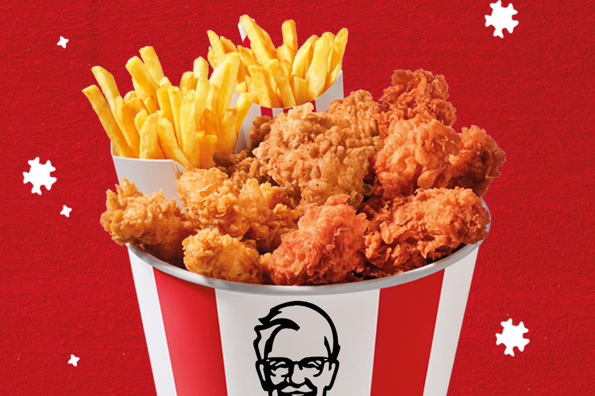

KFC de podcast
Hello world
Welkom bij de KFC Podcast: De Smakelijke Geschiedenis van een Legende Heb je je ooit afgevraagd wat er achter de gouden korst van KFC schuilgaat? Hoe Colonel Sanders zijn geheime recept bedacht, of wat er allemaal komt kijken bij de meest iconische kipketen ter wereld? Dan ben je hier aan het juiste adres! In de KFC Podcast nemen we je mee op een reis door de geschiedenis, de geheimen, en de cultuur van Kentucky Fried Chicken. Van de oorsprong van de 11 kruiden en specerijen tot de wereldwijde invloed van deze fastfoodgigant. Verwacht boeiende verhalen, interviews met insiders, en verrassende feiten die je hongerig maken naar meer. 🍗 Waarom luisteren? Ontdek hoe een simpele kipketen een wereldwijd fenomeen werd. Hoor inspirerende anekdotes over doorzettingsvermogen, marketinggenialiteit en smaakontwikkeling. Leer meer over de rol van KFC in popcultuur, sociale trends en voedselinnovatie. Pak een bucket, zet je koptelefoon op en duik in de smakelijke wereld van de KFC Podcast. Ready to wing it? 🐔 🎧 Abonneer je nu en luister waar je maar wilt!
Hier is een een link naar de officiële website van KFC
